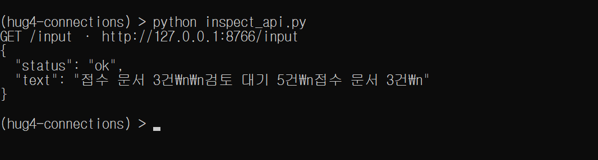
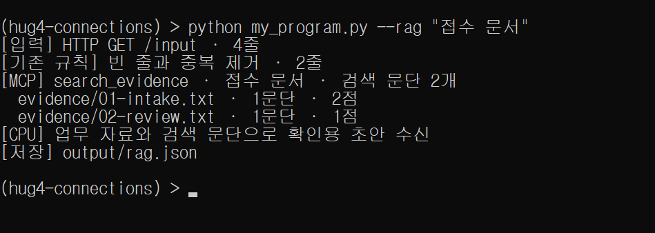
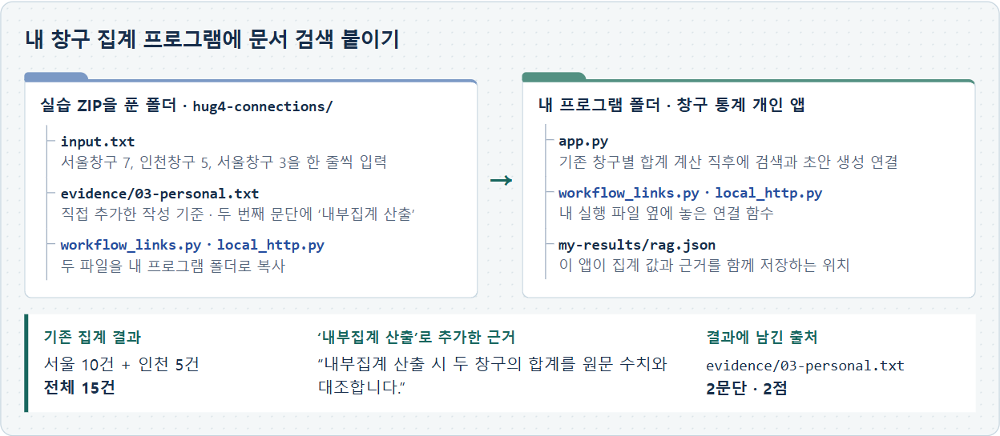

4회차 · 연결 실습 실행 안내
내 도구 실행과 연결
‘접수 문서 3건, 검토 대기 5건’을 한 문장으로 정리하려면 원문과 작성 기준이 필요합니다. 내가 만든 프로그램이 두 자료를 가져와 문장 초안을 받아보는 과정을 따라갑니다.
수업 전에 Python과 Claude Code를 설치합니다
Python은 .py 파일에 적힌 명령을 실행합니다. Claude Code는 내가 설명한 업무에 맞춰 그 파일을 작성하거나 수정하는 도구입니다. Windows 시작 메뉴에서 PowerShell을 열면 명령을 입력할 창이 나옵니다. 글자로 명령을 입력해 프로그램을 쓰는 방식을 CLI라고 합니다.
py -3.12 --version과 claude --version으로 설치 여부를 확인합니다. 없는 도구는 Windows 패키지 설치 도구인 winget으로 설치합니다.
winget --version
winget install --id Python.Python.3.12 --exact --source winget
winget install --id Anthropic.ClaudeCode --exact --source wingetGit으로 변경 이력을 보거나 Claude Code에서 Git Bash가 필요하면 winget install --id Git.Git --exact --source winget으로 Git for Windows를 설치합니다. 그 뒤 PowerShell을 다시 열고 아래 결과에서 버전을 확인합니다.
py -3.12 --version
claude --versionWinGet을 사용할 수 없다면 교재의 실제 Python 설치 화면을 따라 설치합니다. Windows CPU 실행기와 Qwen2.5 0.5B GGUF도 수업 전에 받습니다.

연결 실습 파일과 내 입력을 준비합니다
- ZIP을 풀어
api_server.py와input.txt가 있는hug4-connections폴더를 엽니다. 탐색기 주소 표시줄에powershell을 입력합니다. input.txt에 내 도구를 처음 시험한 텍스트를 400자 이내로 쓰고 UTF-8로 저장합니다. UTF-8은 한글을 파일에 기록하고 읽을 때 양쪽이 사용할 문자 표기 방식입니다.- 수업 전에 실습 전용 Python 환경을 준비합니다. 첫 줄은 실습용 Python과 추가 기능을 둘
.venv폴더를 만듭니다. 둘째 줄은 그 폴더의 Python을 써서requirements.txt에 적힌 추가 기능을 설치합니다.py -3.12 -m venv .venv .\.venv\Scripts\python.exe -m pip install -r requirements.txt

requirements.txt와 input.txt가 함께 보이는 위치에서 작업합니다. 마지막 줄은 이 폴더의 Python 버전입니다.Claude Code에 로그인하고 실제 응답을 확인합니다
- 계정 연결 상태를 봅니다.
claude auth status --text로그인이 필요하면
claude auth login을 실행해 공식 로그인 화면에서 본인 Team 계정을 선택합니다. 연결을 해제하려면claude auth logout을 실행합니다. - 내 프로젝트를 만드는 세션을 엽니다. 작업 폴더에서
claude를 실행하고, 어떤 입력을 넣어 어떤 결과를 낼지 설명합니다. - 한 번 요청하고 결과를 받습니다. 프로그램도 답을 읽을 수 있게 JSON 형식을 지정합니다. JSON은 항목 이름과 그 값을 짝지어 쓰는 데이터 형식입니다.
$sourceText = Get-Content -LiteralPath .\input.txt -Raw -Encoding UTF8 $instruction = Read-Host '이 입력으로 만들 결과를 적으세요' $taskPrompt = $instruction + [Environment]::NewLine + $sourceText claude -p --output-format json --max-turns 2 -- "$taskPrompt"


| 명령 또는 옵션 | 쓰임 |
|---|---|
claude auth status | 계정 연결 상태를 JSON으로 반환합니다. --text는 사람이 읽을 문장으로 표시합니다. |
-p · --output-format json | 요청을 한 번 처리한 뒤 종료합니다. 출력 JSON의 result와 is_error를 읽습니다. |
--json-schema | 받을 필드와 자료형을 지정합니다. structured_output이 있는지 확인한 뒤 원문과 대조합니다. |
--max-turns 2 | 한 요청에서 에이전트가 이어서 작업할 수 있는 턴 수를 제한합니다. |
상태 검사에 연결이 표시돼도 실제 요청의 응답까지 확인합니다. 오류가 나오면 메시지와 종료 상태를 읽습니다.
API로 업무 원문을 요청합니다
평소에는 내가 파일을 열고 문장을 복사했습니다. 이번에는 내 프로그램이 다른 프로그램에 “현재 원문을 주세요”라고 요청합니다. 어떤 기능을 어떻게 요청하면 어떤 결과를 받는지 정해 둔 약속을 API라고 합니다. 이 실습은 HTTP라는 통신 규칙으로 요청을 보냅니다.
요청을 보내는 프로그램이 클라이언트, 요청을 기다렸다가 처리해 주는 프로그램이 서버입니다. 여기서는 둘 다 내 PC에서 실행합니다. 요청을 받을 프로그램을 첫 창에서 계속 켜 두고, 둘째 창에서 요청을 보냅니다.
- 서버를 켭니다. 표시된 주소
http://127.0.0.1:8766/input에서127.0.0.1은 내 PC,8766은 그 PC에서 요청을 받을 프로그램을 찾는 번호(포트)입니다. 연결 실습 동안 이 창을 열어 둡니다.py -3.12 api_server.py - 클라이언트에서 원문을 요청합니다. 아래 프로그램이 보내는
GET /input에서GET은 자료 읽기,/input은 실습 서버가 정해 둔 원문 조회 경로입니다. 서버가 돌려준 JSON에서status는 파일을 읽은 상태,text는 실제 원문입니다.py -3.12 inspect_api.py input.txt한 줄을 바꾼 뒤 다시 요청해text가 바뀌는지 봅니다. 원문을 보관한 뒤 파일을 비우면HTTP 200과status: empty가 함께 나옵니다. 서버는 요청에 응답했고, 응답의 내용은 “파일이 비었습니다”입니다. 다음 단계 전에 원문을 복구합니다.

GET /input 응답입니다. status에서 파일을 읽었는지 보고 text에서 내용을 확인합니다. 화면의 \n은 원래 파일의 줄바꿈입니다. 중복 줄도 이 단계까지는 그대로 들어옵니다.MCP로 검토 기준을 읽는 도구를 찾아 씁니다
이번에는 “항목 이름과 숫자를 그대로 적으세요”라는 검토 기준이 필요합니다. 이 기준을 찾아 읽는 기능을 Claude Code와 내 프로그램이 함께 쓰게 해보겠습니다. MCP(Model Context Protocol)는 프로그램들이 사용 가능한 도구의 이름과 사용법을 알아보고, 정해진 형식으로 도구 실행을 요청할 수 있게 해 주는 공통 규칙입니다.
앞에서 원문을 요청할 때는 프로그램이 /input이라는 경로를 알고 있었습니다. 이번에는 검사기 inspect_mcp.py가 tools/list로 이름과 사용법을 받고, tools/call에 이름을 넣어 기준 읽기를 요청합니다. 실제로 파일을 여는 쪽은 mcp_server.py입니다. MCP로 공개한 도구가 내부에서 또 다른 API를 호출할 수도 있습니다. 같은 자료로 API와 MCP의 역할 따라가기
- 앞에서 준비한 Python 환경으로 검사기를 실행합니다. 검사기가 서버를 시작하므로 별도의 MCP 서버 창은 필요 없습니다.
.\.venv\Scripts\python.exe inspect_mcp.py tools/list에서read_input을 확인합니다.tools/call read_input {}로 실행한 결과의 상태와 텍스트를 HTTP API의 값과 대조합니다.review_rules.txt에 내 업무의 검토 기준을 적은 뒤 검사기를 다시 실행합니다.tools/call read_review_rules {}의{}는 추가로 보낼 값이 없다는 뜻입니다. 반환된 기준이 내가 적은 문장과 같은지 봅니다.
Claude Code에서도 같은 서버를 등록합니다
같은 폴더에서 다음 명령으로 등록합니다. --scope local은 현재 프로젝트에서 쓰는 개인 설정을 뜻합니다.
$mcpPython = (Resolve-Path .\.venv\Scripts\python.exe).Path
$mcpServer = (Resolve-Path .\mcp_server.py).Path
claude mcp add --transport stdio --scope local hug4-input -- "$mcpPython" "$mcpServer"
claude mcp get hug4-inputclaude를 열고 /mcp에서 연결 상태를 확인합니다. read_input 도구를 인수 없이 호출해 결과를 보여달라고 요청합니다. 입력 파일과 응답을 대조합니다. 등록을 해제할 때는 claude mcp remove --scope local hug4-input을 실행합니다.

tools/list 아래에서 이름을 찾고, tools/call read_review_rules 아래에서 모델에 보낼 작성 기준을 읽습니다.CPU 모델에 같은 입력을 보내고 결과를 비교합니다
- CPU 모델 서버를 시작합니다. API와 CPU 모델 서버 창을 열어둔 채 연결 실습 폴더에서 실행합니다.
py -3.12 run_cpu.py 입력 상태 · ok를 확인하고 만들 결과를 입력합니다. API가 반환한text와 내 요청이 모델 입력으로 쓰입니다. 모델 응답을 API·MCP에서 확인한 원문과 대조합니다.- 같은 폴더에서 기본 실행과 연결 실행을 비교합니다.
output폴더의 두 JSON에서 업무 결과가 일치하는지, 연결 결과의 초안에 틀린 내용이 있는지 확인합니다.py -3.12 my_program.py .\.venv\Scripts\python.exe my_program.py --connected

질문에 맞는 문단을 찾아 같은 CPU 모델에 보냅니다
앞에서는 언제나 같은 검토 기준을 읽었습니다. 기준이 여러 파일에 나뉘어 있으면, 질문과 관련된 부분을 먼저 골라 이번 요청에 붙일 수 있습니다. 이렇게 찾아온 자료로 답을 쓰는 방식을 RAG(검색 증강 생성)라고 합니다. 질문을 바꿔 검색 결과 비교하기
- 두 서버 창을 열어 두고 실습 폴더에서 실행합니다.
.\.venv\Scripts\python.exe my_program.py --rag "접수 문서" Get-Content -LiteralPath .\output\rag.json -Encoding UTF8 rows는 프로그램이 정리한 업무 결과,evidence는 검색된 문단,draft는 모델이 작성한 초안입니다.evidence/01-intake.txt의 첫 문단을 열고 초안이 항목 이름과 숫자를 정확하게 옮겼는지 확인합니다.


search_evidence 다음에 파일명·문단·일치 점수가 나옵니다. output/rag.json을 열어 모델이 받은 문단과 최종 초안을 대조합니다.앞에서 만든 내 프로그램에 붙입니다
서버는 켜 둔 채 workflow_links.py와 local_http.py를 내가 만든 실행 파일 옆으로 복사합니다. 실습 폴더의 evidence/에 내 작성 기준을 넣습니다. 내 프로그램에서 업무 값을 계산한 직후 문단 검색을 호출하고, 찾은 문단과 그 업무 값으로 초안을 작성해 함께 저장합니다.

evidence/에 둡니다. 다른 주제를 고른 경우에도 같은 위치에서 검색을 연결합니다.공식 문서와 설치 안내
- 설치 · Windows용 Python · Python 전용 실행 환경 · Git for Windows
- Claude Code · Windows 설치 · Team 계정 연결 · CLI 명령과 옵션
- 프로그램 연결 · API의 뜻 · MCP의 구성과 도구 호출 · Claude Code의 MCP 연결